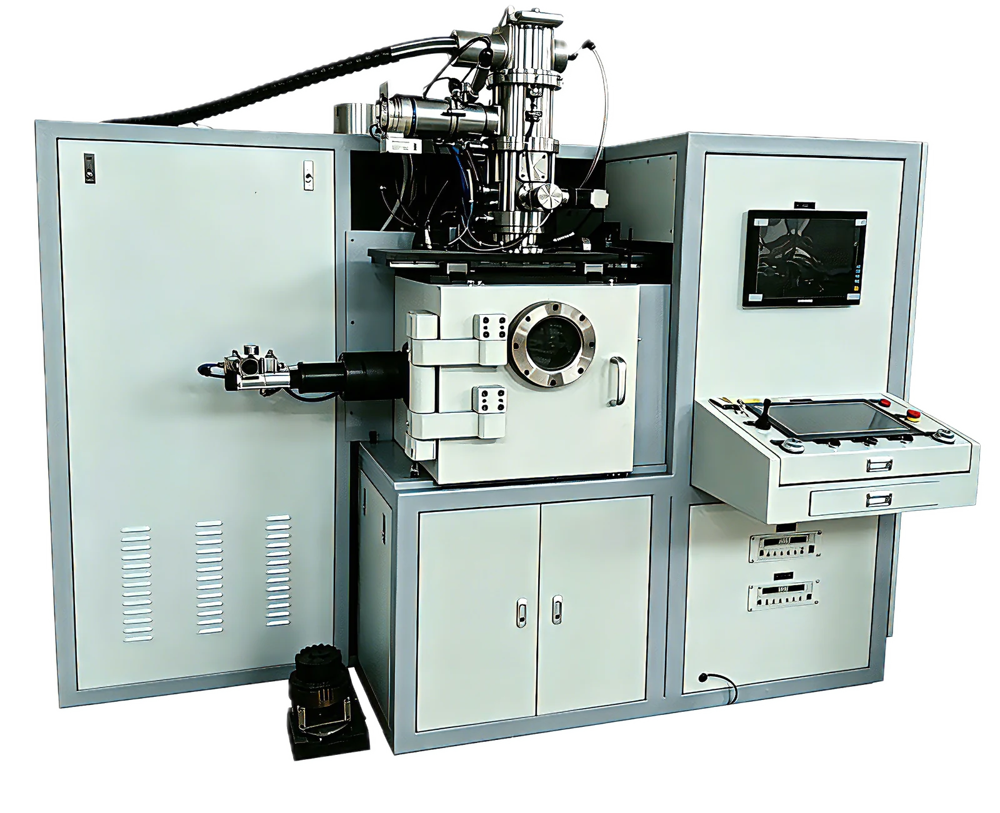

Complementary Machines
The generator supports flame work at the bench and on the line.

WELDING MACHINERY
Turntable-Type Copper Manifold Brazing Machine
Rotary flame brazing for copper manifolds, fed by generated gas.

WELDING MACHINERY
Electron Beam Welding Machine
6 kW vacuum EBW for deep, oxidation-free joints where a flame cannot reach.

WELDING MACHINERY
Fronius Welding Machine
400 A MIG/MAG source for the arc side of the same bench.